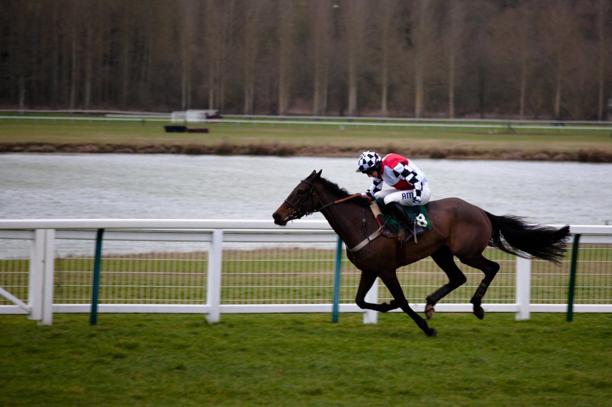

San Sebastián echa el cierre a 2026 con 91 carreras y su mejor entrada en años
El Hipódromo de San Sebastián terminó el 30 de septiembre una temporada de 18 jornadas, la de su 110.ª Temporada de Verano, con la mayor asistencia global de los últimos años.

La campaña arrancó en abril con tres jornadas de primavera y siguió con quince más en verano. Fueron casi seis meses de actividad en el recinto donostiarra.
La imagen de la temporada llegó el 15 de agosto. Más de 7.000 espectadores acudieron a la jornada de la Copa de Oro, la mejor cifra en esa fecha en los últimos años. Ese día abrió la segunda edición de la UAE President Cup - Spain, Grupo III para Pura Raza Árabe sobre 1.600 metros y dotada con 200.000 euros. Entre nueve participantes se impuso la favorita CHDIA, de Wathnan Racing, que aguantó por un cuello a WALA'A. ALLIE SAINT LON fue tercera. Era su sexta victoria seguida: la yegua no pierde desde noviembre de 2025.
Después se corrió la 58.ª Copa de Oro, sobre 2.400 metros, con doce participantes y 70.000 euros en premios, 40.000 para el ganador. Enzo Corallo lanzó a ESPOIR AVENIR a menos de 450 metros de la meta, y el caballo ganó por cuatro cuerpos y medio. SIRJAN repitió el segundo puesto de 2025 y SHACKLETON completó el podio.
Seis días antes, el 9 de agosto, el Gran Premio Hotel María Cristina para yeguas, sobre 2.200 metros y pista mojada, fue para QUEEN OF SCIENCE. Montada por Václav Janácek, batió por el exterior a la favorita DARKAVA por dos cuerpos. Yeguada Rocío metió además a ARZUA entre las tres primeras.
En la milla del Gran Premio Turismo Eusko Jaurlaritza - Gobierno Vasco ganó VAMOS NIÑO, por cuerpo y medio sobre GOLD INDEX, con SKYTREE tercero. Para Evelyn Rodríguez fue su primer gran premio en San Sebastián, y la convirtió en la segunda mujer que gana esta prueba como jockey.
El 30 de agosto, NARCEA, de Cuadra Martul, preparada por Miguel Alonso Roldán y montada por Alejandro Gutiérrez Val, se llevó el Critérium Internacional - Tattersalls (1.500 m). Ganó por medio cuerpo a ELCANO, con ZELRYA tercera. Había debutado ganando el 5 de julio y venció también en el Premio Irish Thoroughbred Marketing el 9 de agosto. Tres salidas, tres victorias.
Fichas: V. Janacek (jinete)
Por Martín Larrañeta